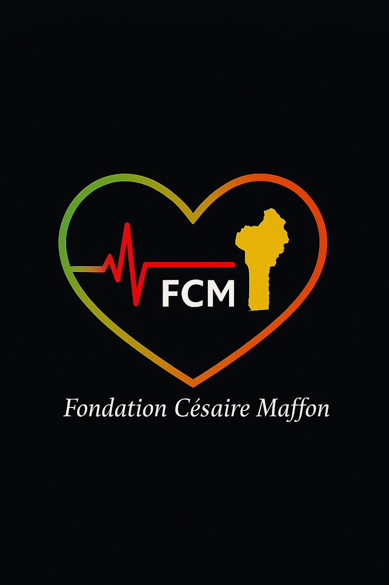

Fondation Césaire Maffon is a non-profit organisation dedicated to improving the lives of people affected by cardiovascular disease in Benin, by making life-saving screening and treatment genuinely accessible. We work alongside hospitals, cardiologists, and partner organisations to ensure that no patient is left behind simply because a pacemaker, an ICD (Implantable Cardioverter Defibrillator), or a diagnostic test is unavailable. The foundation is therefore committed to several essential missions, including:
La Fondation Césaire Maffon est une organisation non gouvernementale à but non lucratif dédiée à l’amélioration de la vie des personnes touchées par les maladies cardiovasculaires au Bénin, en rendant réellement accessibles le dépistage et les traitements qui sauvent des vies. Nous travaillons aux côtés des hôpitaux, des cardiologues et des organisations partenaires pour que plus aucun patient ne soit laissé de côté simplement parce qu’un stimulateur cardiaque, un DAI (Défibrillateur Automatique Implantable) ou un examen de dépistage n’est pas accessible. Ainsi, la fondation s’engage à remplir plusieurs missions essentielles notamment:
Our programmes are based on practical, concrete solutions: providing devices, equipping hospitals, and identifying patients in time—before tragedy strikes. These include:
Nos programmes reposent sur des solutions concrètes : fournir des dispositifs, équiper les hôpitaux et identifier les patients à temps, avant qu’un drame ne survienne. Cela inclut:
We are only at the beginning of a long journey, but every device delivered and every patient screened represents a life with more time, dignity, and hope. Through our work, we aim to:
Nous ne sommes qu’au début d’un long chemin, mais chaque dispositif fourni et chaque patient dépisté représente une vie avec plus de temps, plus de dignité et plus d’espoir. Dès lors, nous œuvrons pour:
A few years ago, my younger brother Césaire passed away at just 30 years old. He collapsed during a football match, suddenly struck by cardiac arrest: a life shattered in an instant.
Il y a quelques années, mon jeune frère Césaire est décédé à seulement 30 ans. Il s’est effondré pendant un match de football, soudainement victime d’un arrêt cardiaque - une vie brisée en un instant.
This tragedy could almost certainly have been prevented had he been diagnosed in time and fitted with an ICD (Implantable Cardioverter Defibrillator). Many people living with cardiovascular disease are alive today because they had access to medical care and life-saving technology that my brother never had the chance to receive.
Un drame qui aurait presque certainement pu être évité s’il avait été diagnostiqué à temps et équipé d’un DAI (Défibrillateur Automatique Implantable). Beaucoup d’autres personnes vivant avec une maladie cardiovasculaire sont encore en vie aujourd’hui parce qu’elles ont eu accès à des soins médicaux et à une technologie salvatrice que mon frère n’a jamais eu la chance de recevoir.
It is so that other families in Benin do not endure the same pain that Fondation Césaire Maffon was created.
C’est pour que d’autres familles au Bénin ne vivent pas la même douleur que la Fondation Césaire Maffon a été créée.
Our mission is simple yet profound: to ensure that every patient who needs cardiac screening, a pacemaker, or an ICD (Implantable Cardioverter Defibrillator) has a real chance to access it.
Notre mission est simple, mais profonde : faire en sorte que chaque patient ayant besoin d’un dépistage cardiaque, d’un stimulateur cardiaque ou d’un DAI (Défibrillateur Automatique Implantable) ait une réelle chance d’y accéder.
Because every heartbeat counts.
Parce que chaque battement de cœur compte.
Because behind every heartbeat lies a life, a family, and a future.
Parce que derrière chaque battement de cœur se cache une vie, une famille et un avenir.
For device donations, partnerships, or financial support, please contact us at:
Pour les dons de dispositifs, les partenariats ou le soutien financier, vous pouvez nous contacter à l’adresse suivante:
Email: info@fondationcesairemaffon.org